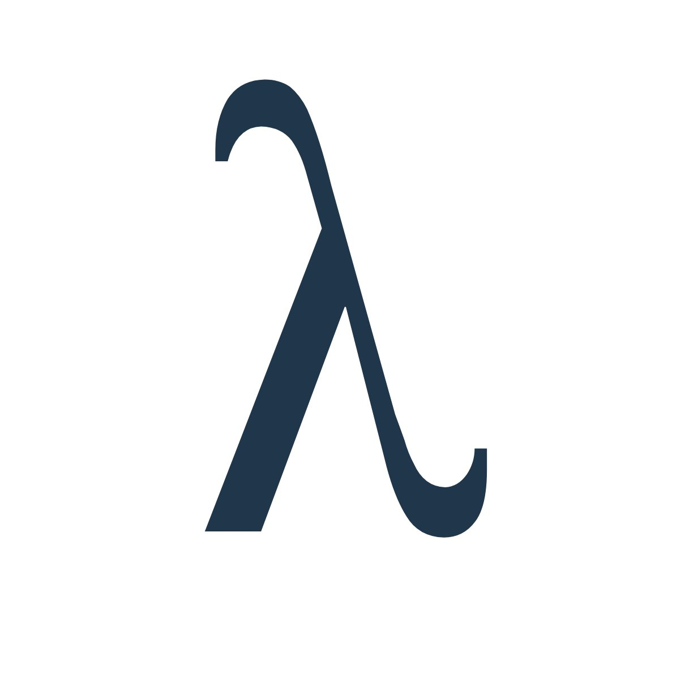

/LEARN
How it works
Subscribe
Logos Index
SUI/SOL Ratio
Learn
About
Aristotle · Learn
Learn
Short essays on onchain data, markets, and the Sui network.
01
Why Onchain Data Has a Structural Edge
Onchain metrics reflect actual capital decisions — recorded publicly and permanently — before any narrative forms.
4 min read
02
Why Sui TVL Moves Differently Than Other L1s
TVL on Sui behaves differently than on more mature Layer 1 blockchains. Some movements can look like new capital inflows when they are not.
5 min read
03
Sui and the Agentic Economy Overview: Part 1
AI agents need to transact continuously, at high volume, and with immediate finality. Here is why Sui's architecture fits this emerging economy.
4 min read
04
Why Most Sui Commentary Is Noise — And What to Watch Instead
Price movements frequently drive the narrative in Sui. Here is what to watch instead.
5 min read
05
From Diem to Sui: What Mysten Labs Has Built (and Why it Matters)
The team behind Sui came from Meta's Novi research division. Here is why that origin story matters for long-term assessment.
4 min read
06
BluefinX: From Pool to Trading Desk
A new RFQ system on Sui backed by Mysten Labs and Wintermute. If DeepBook is the stock exchange, BluefinX is the trading desk.
4 min read
07
Why SUI Token Unlocks Matter Less Than You Might Think
Token unlocks create more noise than signal. Here's what actually drives sell pressure — and what doesn't.
5 min read